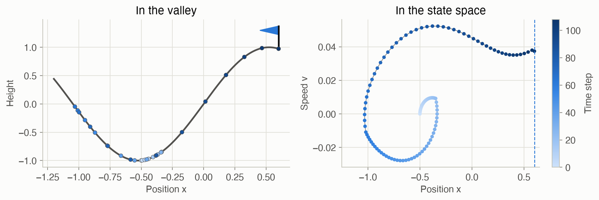
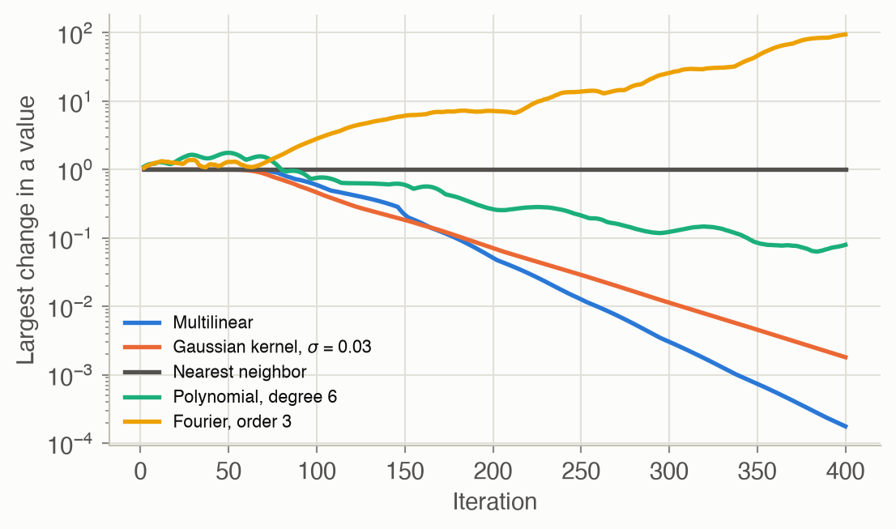

8 · Approximate Value Functions
Part II — Sequential Problems
Big picture
Where this chapter fits
Chapter 7 solved MDPs by storing one value per state in a table and improving the table with Bellman backups. That works for a rover on a 20-cell grid. It fails when the state is continuous, like a car’s position and speed, or when there are more states than atoms in the universe, like a board game. This chapter keeps the idea of value iteration but replaces the table with a function \(U_\theta(s)\), described by a modest number of parameters \(\theta\), that can be evaluated at any state. Nearly every method in the rest of the book leans on this idea: online planning (Chapter 9) uses value estimates at its leaves, model-free learning (Chapter 17) fits value functions from experience, and planning with beliefs (Part IV) works in a continuous space of probability distributions.
The question: how do you run value iteration when there are infinitely many states?
The short answer: pick a finite set of sample states. Do Bellman backups only there. Fit a function through the results to fill in every other state. Repeat. How you fill in the gaps — by copying nearby values, interpolating between them, or fitting a global formula — decides how accurate and how stable the result is.
The key ideas at a glance
Tables don’t scale, so approximate. The running example is mountain car (Figure 2): a weak car in a valley must rock back and forth to build enough speed to climb out. Its state is a position and a speed, two real numbers, so there are infinitely many states. Instead of a table, use a parametric value function \(U_\theta(s)\): a function with adjustable numbers \(\theta\) that returns a value for any state. Here every step costs 1 and there’s no discounting, so a state’s value is minus the number of steps the best driver needs to get out.
Approximate value iteration: back up at samples, then fit. Choose a finite set of sample states. At each, do the Bellman backup of Chapter 7, using the current \(U_\theta\) wherever the next state isn’t a sample. Then adjust \(\theta\) so \(U_\theta\) matches those backed-up values, and repeat. To act, look one step ahead: pick the action whose next state has the best value.
Local approximation: ask the neighbors. A local method stores one value per sample state and estimates any other state from nearby samples:
- nearest neighbor copies the closest sample’s value;
- kernel smoothing takes a weighted average, with closer samples weighted more;
- multilinear interpolation on a grid blends the \(2^d\) corners of the grid cell the state falls in (\(d\) is the number of state variables);
- simplex interpolation blends just \(d + 1\) corners, which matters in higher dimensions.
Global approximation: fit one formula everywhere. A global method writes the value as a combination of features of the state, such as \(x\), \(v\), \(x^2\), \(xv\) or \(\sin(2\pi x)\), and chooses the weights by least squares. A neural network goes further and learns its own features. Every parameter affects every state, so a global fit can generalize from few samples, but it can also smear out sharp features.
The choice changes the answer, and even whether there is one. On mountain car, with the same 441 sample states:
- interpolation reaches the goal from every one of 225 starting states, on average only about 1 step slower than a very fine grid;
- nearest neighbor never settles: its values keep falling by 1 every iteration;
- some global fits oscillate forever or blow up.
Methods that only take weighted averages of stored values (weights nonnegative, summing to 1) keep value iteration stable. Interpolation is one of them. Regression isn’t.
True value functions have cliffs. One more swing can cost dozens of steps, so the true value jumps sharply between nearby states. Methods that smooth or fit global curves blur these cliffs. Fine grids capture them, but the number of grid points grows exponentially with the number of state variables. That’s the curse of dimensionality, and it’s why later chapters turn to other tools.
Vocabulary
| Term | Plain meaning |
|---|---|
| Parametric value function \(U_\theta(s)\) | A formula with adjustable numbers \(\theta\) that returns a value for any state |
| Sample states \(S = s_{1:m}\) | The finite set of states where backups are actually done |
| Approximate value iteration | Alternate backups at the samples with refitting \(U_\theta\) |
| Local approximation | Value at \(s\) built from the stored values of nearby samples |
| Global approximation | Value from a formula whose parameters affect every state |
| Kernel \(k(s, s')\) | How much sample \(s'\) counts when estimating \(s\); larger when closer |
| Multilinear / simplex interpolation | Blend the corners of the grid cell (all \(2^d\), or just \(d+1\)) |
| Features (basis functions) \(\beta(s)\) | Numbers computed from the state that a linear model weights |
| Least squares | Choose \(\theta\) to minimize the sum of squared errors at the samples |
| Neural network regression | A value function whose features are learned too, fitted by gradient descent |
| Curse of dimensionality | Grid sizes grow exponentially with the number of state variables |
After this chapter you can
- Explain why tables fail for continuous states, and run approximate value iteration.
- Evaluate nearest-neighbor, kernel, multilinear and simplex approximations by hand.
- Fit a value function by least squares on features, and describe neural network regression.
- Predict when approximate value iteration is stable, and diagnose drift, oscillation, and blur.
- Choose an approximator by weighing accuracy, stability, and the number of state variables.
Intuition
TipAnalogy
A weather service measures temperature at a few hundred stations but has to draw a map of the whole country. It can:
- copy the nearest station (a map of flat patches);
- average nearby stations, weighting closer ones more (a smooth map, but a hot valley bleeds into the cold hills around it);
- interpolate within each triangle or square of stations (accurate if stations are dense);
- fit one formula to all stations, such as a smooth surface over the country (a few numbers, but local detail gets lost).
Approximate value iteration draws the same kind of map, with one twist: each station’s “measurement” is a Bellman backup that reads the map itself, at the place the car will be next. So mapping errors feed back into the next round of measurements. A good method keeps those errors from snowballing.

Why a table fails
The car’s state is its position \(x\) (between −1.2 and 0.6) and speed \(v\) (between −0.07 and 0.07). Every step costs 1 point, and the trip ends at \(x = 0.6\). So the value of a state is minus the number of steps the best driver needs from there. From rest at \(x = -0.5\), the best driver needs 106 steps. The engine is too weak to climb straight out, so the car rocks: 22 steps accelerating right, 39 left, then 46 right (Figure 2). There’s a value for every pair of real numbers \((x, v)\), so no table can hold them all. See Equation 1.
Value iteration on a grid of samples
Lay a 41 × 41 grid over the state space: 1,681 sample states. Start all values at 0. In each round, every sample asks: “if I take each action, where do I land, and what’s the value there?” The landing spot is almost never a grid point, so its value is read off the current approximation. Then the new values are stored at the grid points. Near the goal the values become correct first, and correct values spread outward round by round, as in the value iteration of Chapter 7. Until a sample “hears” about the goal, its value simply drops by 1 each round. After 64 rounds every sample has heard, and after 207 rounds no value changes by more than 0.01. The greedy policy then takes 108 steps from rest at \(x = -0.5\), against 106 on a 201 × 201 grid. See Equation 2.
Local methods: ask the neighbors
Suppose three sample states on a line, at \(s = 0\), \(1\) and \(3\), have values 5, 7 and 9. What’s the value at \(s = 0.5\)?
- Nearest neighbor: the closest sample is 0, so the answer is 5.
- Kernel smoothing with weights proportional to 1/distance: the distances are 0.5, 0.5 and 2.5, giving weights 2, 2 and 0.4, which normalize to 0.455, 0.455 and 0.091. The answer is \(0.455 \times 5 + 0.455 \times 7 + 0.091 \times 9 = 6.27\).
- Linear interpolation between the two samples on either side, 0 and 1: halfway between 5 and 7 gives 6.
Figure 3 shows these methods on a real slice of the mountain car value function (the car at rest, \(v = 0\), with only 9 samples along \(x\)). Nearest neighbor gives flat steps, the kernel blurs, and interpolation draws straight lines between samples. See Equation 4, Equation 5 and Equation 6.
Global methods: fit one formula
Instead of looking up neighbors, fit a formula to all the samples at once. For points \((0, 1)\), \((1, 3)\) and \((2, 4)\), the best straight line in the least-squares sense is \(1.17 + 1.5s\). It misses each point a little but uses only 2 numbers. With richer features, such as higher powers of \(x\) and \(v\) or sines and cosines, a formula can bend more. But every parameter affects every state, so fixing the fit in one place can spoil it somewhere else (Figure 3, bottom right). See Equation 3 and Equation 8.
Stability and cliffs
Two things go wrong in practice.
- Drift. With nearest neighbor, a sample state whose every next state is still “nearest” to itself backs up “−1 plus my own value” every round, forever. On the 21 × 21 grid, 254 of the 441 sample states are caught in this loop. Their values fall by 1 per round without end, and so do the values of 86 more states whose moves lead into them. Interpolation avoids this, because a state never puts all its weight on itself.
- Cliffs. A car at rest at \(x = 0.35\) needs 86 steps, but at \(x = 0.40\) only 41: from there it can reach the top with one fewer swing. Methods that smooth or fit global curves blur such cliffs, and a slightly wrong value near a cliff flips which action looks best.
Figure 8 shows the consequences: interpolation works reliably, averaging with too wide a kernel loses cars, and global fits range from good to divergent.
![Four small line charts sharing axes: position from minus 1.2 to 0.6 across, value (minus steps to the goal) from about minus 110 to 0 up the side. Each shows the same gray true curve, which drops steeply near position minus 0.8, stays near minus 80 to minus 107 across the middle, and jumps up near 0.35 and again at 0.6. Nine dots mark the samples. Nearest neighbor draws flat steps; the Gaussian kernel draws a smooth curve that rounds off the cliffs; linear interpolation connects the dots with straight segments; the degree-6 polynomial curves through the dots but overshoots between them.](ch08-approximate-value-functions_files/figure-html/fig-slice-1d-output-1.png)
Formalism
Parametric value functions and the greedy policy
A parametric value function \(U_\theta(s)\) returns a value for any state, where \(\theta\) is a vector of parameters (ADM §8.1). Given one, act greedily by looking one step ahead:
\[ \pi(s) = \mathop{\mathrm{arg\,max}}_{a} \left( R(s, a) + \gamma \sum_{s'} T(s' \mid s, a)\, U_\theta(s') \right) \tag{1}\]
In words. For each action, add the immediate reward to the discounted value of where you might land, as estimated by \(U_\theta\). Take the best.
Term by term.
- \(R(s, a)\) is the immediate reward, here −1 per step.
- \(T(s' \mid s, a)\) is the transition model. For continuous states the sum becomes an integral, usually estimated from sampled next states. Mountain car is deterministic, so there’s a single next state.
- \(U_\theta(s')\) is the approximation, evaluated at a state that generally wasn’t a sample.
- With an approximate action value function \(Q_\theta(s, a)\) instead, the policy is simply \(\pi(s) = \arg\max_a Q_\theta(s, a)\), with no model needed at decision time.
Why it holds. This is the greedy policy of Chapter 7, the same one-step lookahead, with the table lookup \(U(s')\) replaced by a function evaluation. If \(U_\theta\) were exact, it would give an optimal policy.
Approximate value iteration
Choose \(m\) sample states \(S = \{s_1, \ldots, s_m\}\), on a grid or drawn at random, perhaps from states that simulations actually visit (ADM §8.1). Then repeat:
\[ \begin{aligned} u_i &\leftarrow \max_{a} \left( R(s_i, a) + \gamma \sum_{s'} T(s' \mid s_i, a)\, U_\theta(s') \right) \quad \text{for } i = 1, \ldots, m \\[2pt] \theta &\leftarrow \operatorname{fit}\big(S,\ u_{1:m}\big) \end{aligned} \tag{2}\]
In words. Do a Bellman backup at each sample state, using the current approximation for the values of next states. Then refit the approximation to the backed-up values. Repeat until the values stop changing, or for a fixed number of rounds.
Term by term.
- \(u_i\) is the backed-up value, the target, at sample \(s_i\).
- \(\operatorname{fit}\) adjusts \(\theta\) so that \(U_\theta(s_i) \approx u_i\). For local methods it just stores \(\theta_i = u_i\). For regression it solves a least-squares problem.
- Terminal states (the goal) keep the value 0.
Why it holds (and when it doesn’t). In Chapter 7 the backup is a contraction, which guarantees convergence. Fitting can break that guarantee. It is preserved when the fit is an averager: each \(U_\theta(s)\) is a weighted average of the stored values, with nonnegative weights that sum to 1. Nearest neighbor, kernel smoothing and both interpolation schemes are averagers. Approximate value iteration with an averager behaves like exact value iteration on a modified MDP, whose “transitions” jump to the sample states with the interpolation weights as probabilities (G. Gordon, “Stable Function Approximation in Dynamic Programming,” ICML, 1995). With \(\gamma < 1\) it always converges. With \(\gamma = 1\), as here, it also needs every sample state to have a way out: the nearest-neighbor drift in Figure 9 is a state that can only reach itself. Least-squares regression is not an averager, since its weights can be negative, and it can oscillate or diverge (J. Boyan and A. Moore, “Generalization in Reinforcement Learning: Safely Approximating the Value Function,” NIPS, 1995).
Linear approximations
Most of the approximators below are linear in their parameters (ADM §8.1):
\[ U_\theta(s) = \theta^\top \beta(s) = \sum_{i} \theta_i\, \beta_i(s) \tag{3}\]
In words. The value is a weighted sum. The weights \(\theta\) are what’s fitted; the \(\beta_i(s)\) are fixed functions of the state.
Term by term.
- In local methods, \(\theta_i\) is the stored value at sample \(s_i\), and \(\beta_i(s)\) is how much sample \(i\) counts at state \(s\). These weights are nonnegative and sum to 1.
- In global methods, the \(\beta_i(s)\) are features, such as \(1\), \(x\), \(v\), \(x^2\), \(xv\), and \(\theta\) has no direct link to any sample.
- The model is linear in \(\theta\) but can be very nonlinear in \(s\), because the features are.
Nearest neighbor and kernel smoothing
With a distance \(d(s, s')\) between states (ADM §8.2):
\[ U_\theta(s) = \frac{1}{k} \sum_{i \in N_k(s)} \theta_i \tag{4}\]
In words. Average the stored values of the \(k\) sample states closest to \(s\).
Term by term. \(N_k(s)\) is the set of the \(k\) closest samples. With \(k = 1\) the function is piecewise constant: flat patches with jumps between them. Larger \(k\) is smoother but blurrier. The distance must treat the state variables on comparable scales. On this page both axes are first rescaled to \([0, 1]\).
Kernel smoothing replaces the hard cutoff with smooth weights (ADM §8.3):
\[ U_\theta(s) = \sum_{i=1}^m \theta_i\, \beta_i(s), \qquad \beta_i(s) = \frac{k(s, s_i)}{\sum_{j=1}^m k(s, s_j)}, \qquad k(s, s') = \frac{1}{\max\big(d(s, s'), \epsilon\big)} \ \text{ or } \ \exp\!\left(-\frac{d(s, s')^2}{2\sigma^2}\right) \tag{5}\]
In words. Every sample votes, and closer samples get louder votes. The votes are normalized so they sum to 1.
Term by term.
- The kernel \(k(s, s')\) is large when \(s\) and \(s'\) are close.
- The inverse-distance kernel uses a small \(\epsilon\) so it doesn’t divide by zero at a sample.
- The Gaussian kernel’s width \(\sigma\) sets how far a sample’s influence reaches. Too small gives nearest-neighbor-like patches (and gaps where no sample is near). Too large blurs everything together.
- The normalization makes this an averager.
Why it holds. For the example in the Intuition, 1/distance kernels at \(s = 0.5\) are \(2, 2, 0.4\). Normalized, they are \(0.455, 0.455, 0.091\), giving \(U = 6.27\).
Linear interpolation
On a grid, interpolate along each axis in turn (ADM §8.4). In one dimension, between samples \(s_1 < s < s_2\): \(U_\theta(s) = \alpha\,\theta_1 + (1 - \alpha)\,\theta_2\) with \(\alpha = (s_2 - s)/(s_2 - s_1)\). In two dimensions, within a cell with corners \((x_1, y_1)\), \((x_1, y_2)\), \((x_2, y_1)\) and \((x_2, y_2)\):
\[ U_\theta(x, y) = \frac{(x_2 - x)(y_2 - y)\,\theta_{11} + (x_2 - x)(y - y_1)\,\theta_{12} + (x - x_1)(y_2 - y)\,\theta_{21} + (x - x_1)(y - y_1)\,\theta_{22}}{(x_2 - x_1)(y_2 - y_1)} \tag{6}\]
In words. Each corner’s value is weighted by the area of the rectangle on the opposite side of the point. The closer you are to a corner, the bigger its opposite rectangle.
Term by term.
- \(\theta_{jk}\) is the value at corner \((x_j, y_k)\).
- The four weights are nonnegative and sum to 1 (the four rectangles tile the cell), so this is an averager.
- In \(d\) dimensions, multilinear interpolation blends all \(2^d\) corners, each weighted by the volume of the opposite box.
Why it holds. Interpolating along \(x\) on the bottom edge and on the top edge, and then along \(y\) between those two results, gives exactly these products of fractions. Doing \(y\) first gives the same answer. The formula reproduces any function of the form \(a + bx + cy + dxy\) exactly.
Simplex interpolation
Multilinear interpolation needs \(2^d\) corners: 64 in six dimensions. Simplex interpolation splits each cell into \(d!\) simplexes (triangles in 2-D, tetrahedra in 3-D) and blends only the \(d + 1\) corners of the one containing the state (ADM §8.5). Write \(f_j \in [0, 1]\) for how far the state is across the cell along axis \(j\), and sort these fractions from largest to smallest: \(f_{(1)} \ge f_{(2)} \ge \cdots \ge f_{(d)}\).
\[ U_\theta(s) = \sum_{j=0}^{d} \big(f_{(j)} - f_{(j+1)}\big)\, \theta(v_j), \qquad f_{(0)} = 1,\ f_{(d+1)} = 0 \tag{7}\]
In words. Walk from the cell’s lower corner \(v_0\) to its upper corner, stepping up one axis at a time, the axis with the largest fraction first. The \(d + 1\) corners visited form the simplex containing the state. Each corner’s weight is the gap between successive sorted fractions.
Term by term.
- \(v_j\) is the corner reached after stepping up the \(j\) axes with the largest fractions.
- The weights are nonnegative (the fractions are sorted) and telescope to \(f_{(0)} - f_{(d+1)} = 1\), so this is an averager.
- Sorting costs \(O(d \log d)\) and there are only \(d + 1\) terms, versus \(2^d\) for multilinear interpolation.
Why it holds. The weights reproduce the state’s own position: along axis \(j\), only the corners after the step up that axis have coordinate 1, and their weights add up to \(f_j\). So the formula is exact for any linear function, and neighboring simplexes agree along shared faces, so the result is continuous.
Linear regression
A global approximation picks features \(\beta(s)\) and fits \(\theta\) by least squares (ADM §8.6). Stack the features of the samples as rows of a matrix \(X\), so row \(i\) is \(\beta(s_i)^\top\):
\[ \theta^* = \mathop{\mathrm{arg\,min}}_\theta \sum_{i=1}^m \big(\theta^\top \beta(s_i) - u_i\big)^2 = \big(X^\top X\big)^{-1} X^\top u_{1:m} = X^+ u_{1:m} \tag{8}\]
In words. Choose the weights that make the squared prediction errors at the samples as small as possible. There’s a closed-form answer.
Term by term.
- \(X\) has one row per sample and one column per feature.
- \(X^+\) is the pseudoinverse. It equals \((X^\top X)^{-1} X^\top\) when the features are linearly independent, and still gives the smallest-norm best fit when they aren’t. Code uses a numerically stable solver (
np.linalg.lstsq, orX \ uin Julia) rather than forming the inverse. - Common features are polynomials (all products \(x^i v^j\) up to some total degree) and Fourier terms (products of \(\sin\) and \(\cos\) of multiples of \(2\pi x\) and \(2\pi v\) over the state range).
Why it holds. At the minimum, the gradient of the squared error is zero: \(2X^\top(X\theta - u) = 0\). So \(X^\top X \theta = X^\top u\), the normal equations. For the points \((0, 1)\), \((1, 3)\), \((2, 4)\) with features \([1, s]\): \(X^\top X = \begin{pmatrix} 3 & 3 \\ 3 & 5 \end{pmatrix}\) and \(X^\top u = \begin{pmatrix} 8 \\ 11 \end{pmatrix}\), giving \(\theta = (7/6, 3/2)\).
Neural network regression
A neural network learns its features instead of having them chosen (ADM §8.7; Appendix D). With one hidden layer:
\[ U_\theta(s) = w_2^\top \tanh(W_1 s + b_1) + b_2, \qquad \theta \leftarrow \theta - \alpha\, \nabla_\theta \frac{1}{m}\sum_{i=1}^m \big(U_\theta(s_i) - u_i\big)^2 \tag{9}\]
In words. Each hidden unit computes a smooth S-shaped feature of the state. The output is a weighted sum of those features. All the weights are adjusted in small steps downhill on the squared error.
Term by term.
- \(W_1, b_1\) create the hidden features, \(\tanh\) bends them, and \(w_2, b_2\) combine them.
- \(\alpha\) is the step size.
- The gradient comes from the chain rule, applied layer by layer (backpropagation).
- There’s no closed-form answer: the result depends on the starting weights and on how long it trains, and it isn’t an averager.
Worked example
Interpolating in one grid cell
Take a unit cell with corner values \(\theta(0,0) = 10\), \(\theta(1,0) = 20\), \(\theta(0,1) = 30\) and \(\theta(1,1) = 60\), and the state \(s = (0.25, 0.6)\).
Bilinear (Equation 6): the weights are the opposite areas.
| Corner | Opposite area | Weight × value |
|---|---|---|
| (0, 0) | \(0.75 \times 0.4 = 0.30\) | \(3.0\) |
| (1, 0) | \(0.25 \times 0.4 = 0.10\) | \(2.0\) |
| (0, 1) | \(0.75 \times 0.6 = 0.45\) | \(13.5\) |
| (1, 1) | \(0.25 \times 0.6 = 0.15\) | \(9.0\) |
| Total | 1.00 | 27.5 |
Simplex (Equation 7): the fractions are \(f_x = 0.25\) and \(f_v = 0.6\). The larger is \(v\), so walk \((0,0) \to (0,1) \to (1,1)\). The weights are \(1 - 0.6 = 0.4\), \(0.6 - 0.25 = 0.35\) and \(0.25\), so
\[ U = 0.4 \times 10 + 0.35 \times 30 + 0.25 \times 60 = 29.5. \]
The two methods differ because the corner values aren’t linear: \(10 + 60 \ne 20 + 30\). For a linear function they would agree (Problem 3).
One backup on mountain car
With the converged 41 × 41 approximation, here is the Bellman backup at the start state \((x, v) = (-0.5, 0)\). Each action gives one next state; its value is interpolated, since it isn’t a grid point.
| Action | Next position | Next speed | \(U_\theta\)(next) | \(-1 + U_\theta\)(next) |
|---|---|---|---|---|
| accelerate left | -0.5012 | -0.00118 | -112.36 | -113.36 |
| coast | -0.5002 | -0.00018 | -112.70 | -113.70 |
| accelerate right | -0.4992 | 0.00082 | -112.19 | -113.19 |
The three next states are very close together: one step moves the car only slightly. So the choice depends on small differences in the approximation, which is why a smooth but slightly wrong approximation can flip actions.
Least squares by hand
Fit \(U_\theta(s) = \theta_0 + \theta_1 s\) to \((0, 1)\), \((1, 3)\) and \((2, 4)\). From Equation 8, \(\theta = (7/6, 3/2) \approx (1.17, 1.5)\). The predictions are \(1.17, 2.67, 4.17\), and the errors \(-0.17, +0.33, -0.17\) sum to zero, as they must when a constant feature is included.
Interactive
Fill in the gaps
Choose how many samples to take along the value of a car at rest, and how to fill in between them. Watch the cliffs: which methods keep them sharp, and which blur them? The RMS error is measured against the true curve.
Watch approximate value iteration
Pick a grid size and scrub through the iterations. The heat map is the approximate number of steps to the goal (minus the value) at each grid point. The path is what the greedy policy does from the start you choose, computed live from the grid shown. Early on the values are wrong almost everywhere, and cars wander. Watch the correct values spread outward from the goal as the iterations proceed, and compare the coarse and fine grids.
Algorithms & code
Local approximators
class NearestNeighborValue:
"""U(s) = mean of theta over the k sample states closest to s."""
def __init__(self, S: Array, k: int = 1):
self.S, self.k = np.asarray(S, dtype=float), k
self.theta = np.zeros(len(self.S))
def fit(self, S: Array, u: Array):
self.theta = np.asarray(u, dtype=float) # local: theta = targets
return self
def __call__(self, states: Array) -> Array:
# dist[i, j] = distance from query state i to sample state j.
diff = np.asarray(states)[:, None, :] - self.S[None, :, :]
dist = np.linalg.norm(diff, axis=-1)
nearest = np.argsort(dist, axis=1)[:, :self.k]
return self.theta[nearest].mean(axis=1)
class KernelValue:
"""U(s) = sum_i beta_i(s) theta_i, with beta_i(s) proportional to a
kernel k(s, s_i) and normalized so the weights sum to 1."""
def __init__(self, S: Array, kernel):
self.S, self.kernel = np.asarray(S, dtype=float), kernel
self.theta = np.zeros(len(self.S))
def fit(self, S: Array, u: Array):
self.theta = np.asarray(u, dtype=float)
return self
def weights(self, states: Array) -> Array:
"""beta[i, j]: weight of sample state j when evaluating state i."""
diff = np.asarray(states)[:, None, :] - self.S[None, :, :]
k = self.kernel(np.linalg.norm(diff, axis=-1))
return k / k.sum(axis=1, keepdims=True)
def __call__(self, states: Array) -> Array:
return self.weights(states) @ self.theta
def inverse_distance(eps: float = 1e-6):
"""Kernel k = 1 / max(d, eps): closer sample states count for more."""
return lambda d: 1.0 / np.maximum(d, eps)
def gaussian(sigma: float):
"""Kernel k = exp(-d^2 / (2 sigma^2)); sigma sets how far it reaches."""
return lambda d: np.exp(-d**2 / (2 * sigma**2))using ADM, LinearAlgebra
# Each approximator is a mutable struct holding its parameters θ. Calling it
# like a function, U(s), evaluates the value at state s (a vector).
mutable struct NearestNeighborValue
S::Vector{Vector{Float64}} # sample states
k::Int # how many neighbors to average
θ::Vector{Float64} # stored value at each sample
end
function (U::NearestNeighborValue)(s)
nearest = sortperm([norm(s - s′) for s′ in U.S])[1:U.k] # indices of the k closest
return sum(U.θ[nearest]) / U.k
end
mutable struct KernelValue
S::Vector{Vector{Float64}}
kernel::Function # kernel(distance) -> weight
θ::Vector{Float64}
end
function (U::KernelValue)(s)
w = [U.kernel(norm(s - s′)) for s′ in U.S]
return dot(w, U.θ) / sum(w) # normalized weights: an average of stored values
end
inverse_distance(ϵ = 1e-6) = d -> 1 / max(d, ϵ)
gaussian(σ) = d -> exp(-d^2 / (2σ^2))
# Local methods "fit" by storing the targets.
fit!(U, S, u) = (U.θ = copy(u); U)
S = [[0.0], [1.0], [3.0]]
@assert NearestNeighborValue(S, 1, [5.0, 7, 9])([0.4]) == 5
@assert KernelValue(S, inverse_distance(), [5.0, 7, 9])([0.5]) ≈ 27.6 / 4.4 # 6.27Grid interpolation
class _Grid:
"""A regular grid from `lo` to `hi` with `shape` points per axis.
theta holds one value per grid point, shaped like the grid."""
def __init__(self, lo, hi, shape):
self.lo, self.hi = np.asarray(lo, float), np.asarray(hi, float)
self.shape = tuple(shape)
self.width = (self.hi - self.lo) / (np.array(self.shape) - 1)
self.theta = np.zeros(self.shape)
def points(self) -> Array:
"""All grid points as rows, in the same (C) order as theta.ravel()."""
axes = [np.linspace(l, h, n)
for l, h, n in zip(self.lo, self.hi, self.shape)]
return np.array(list(product(*axes)))
def fit(self, S: Array, u: Array):
# S must be self.points(), so the targets fill the grid in order.
self.theta = np.asarray(u, dtype=float).reshape(self.shape)
return self
def _cell(self, states: Array):
"""Lower-corner index of each state's cell, and its position inside
the cell as a fraction from 0 to 1 along each axis."""
z = (np.asarray(states, float) - self.lo) / self.width
# Clip so states on the upper edge use the last cell (fraction 1).
base = np.clip(np.floor(z).astype(int), 0, np.array(self.shape) - 2)
return base, np.clip(z - base, 0.0, 1.0)
class MultilinearValue(_Grid):
"""Interpolate linearly along each axis in turn: each of the cell's 2^d
corners is weighted by the volume of the box opposite it."""
def __call__(self, states: Array) -> Array:
base, f = self._cell(states)
u = np.zeros(len(base))
# corner is a 0/1 vector: 1 means the upper neighbor on that axis.
for corner in product((0, 1), repeat=len(self.shape)):
c = np.array(corner)
weight = np.prod(np.where(c == 1, f, 1 - f), axis=1)
u += weight * self.theta[tuple((base + c).T)]
return u
class SimplexValue(_Grid):
"""Split each cell into d! simplexes and interpolate among the d + 1
corners of the one containing s (Freudenthal triangulation)."""
def __call__(self, states: Array) -> Array:
base, f = self._cell(states)
n, d = f.shape
rows = np.arange(n)
# Walk from the lower corner to the upper corner, stepping up one
# axis at a time, largest fraction first. The weights are the gaps
# between successive sorted fractions (they sum to 1).
order = np.argsort(-f, axis=1)
f_sorted = np.concatenate(
[np.ones((n, 1)), f[rows[:, None], order], np.zeros((n, 1))],
axis=1)
vertex = base.copy()
u = (f_sorted[:, 0] - f_sorted[:, 1]) * self.theta[tuple(vertex.T)]
for j in range(d):
vertex[rows, order[:, j]] += 1
w = f_sorted[:, j + 1] - f_sorted[:, j + 2]
u += w * self.theta[tuple(vertex.T)]
return u# A regular grid: lower corner lo, cell widths δ, and θ shaped like the grid
# (θ[i, j] is the value at lo + δ .* ([i, j] .- 1), since Julia counts from 1).
mutable struct MultilinearValue
lo::Vector{Float64}
δ::Vector{Float64}
θ::Array{Float64}
end
mutable struct SimplexValue
lo::Vector{Float64}
δ::Vector{Float64}
θ::Array{Float64}
end
const GridValue = Union{MultilinearValue, SimplexValue}
# The cell containing s: 1-based index of its lower corner, and the position
# inside the cell as a fraction (0 to 1) along each axis.
function cell(U::GridValue, s)
z = (s .- U.lo) ./ U.δ
i = clamp.(floor.(Int, z), 0, size(U.θ) .- 2) # 0-based; the last cell includes the upper edge
return i .+ 1, clamp.(z .- i, 0, 1)
end
function (U::MultilinearValue)(s)
i, f = cell(U, s)
u = 0.0
# corner runs over all 2^d combinations of 0 (lower) and 1 (upper) per axis.
for corner in Iterators.product(ntuple(_ -> (0, 1), length(s))...)
c = collect(corner)
weight = prod(ifelse.(c .== 1, f, 1 .- f)) # volume of the opposite box
u += weight * U.θ[(i .+ c)...]
end
return u
end
function (U::SimplexValue)(s)
i, f = cell(U, s)
order = sortperm(f, rev = true) # step up the largest fraction first
fs = [1.0; f[order]; 0.0]
vertex = copy(i) # start at the lower corner
u = (fs[1] - fs[2]) * U.θ[vertex...]
for j in eachindex(order)
vertex[order[j]] += 1 # step up one axis
u += (fs[j+1] - fs[j+2]) * U.θ[vertex...]
end
return u
end
# Grid points in the same (column-major) order as θ, so fit! can reshape.
grid_points(U::GridValue) = vec([U.lo .+ U.δ .* (Tuple(I) .- 1) for I in CartesianIndices(U.θ)])
fit!(U::GridValue, S, u) = (U.θ = reshape(u, size(U.θ)); U)
# The worked example: corners (0,0) = 10, (1,0) = 20, (0,1) = 30, (1,1) = 60.
θ = [10.0 30.0; 20.0 60.0] # θ[i, j]: i indexes x, j indexes v
@assert MultilinearValue([0.0, 0], [1.0, 1], θ)([0.25, 0.6]) ≈ 27.5
@assert SimplexValue([0.0, 0], [1.0, 1], θ)([0.25, 0.6]) ≈ 29.5Global approximators
class LinearRegressionValue:
"""U(s) = theta . beta(s), with theta chosen by least squares."""
def __init__(self, basis):
self.basis = basis # basis(states) -> (n, number of features)
self.theta = None
def fit(self, S: Array, u: Array):
X = self.basis(np.asarray(S, float)) # row i is beta(s_i)
# lstsq minimizes ||X theta - u||^2 (via the pseudoinverse of X).
self.theta = np.linalg.lstsq(X, u, rcond=None)[0]
return self
def __call__(self, states: Array) -> Array:
return self.basis(np.asarray(states, float)) @ self.theta
def polynomial_basis(degree: int, lo, hi):
"""All monomials x1^i x2^j ... with total degree <= degree. States are
first rescaled to [-1, 1] per axis so high powers stay well scaled."""
lo, hi = np.asarray(lo, float), np.asarray(hi, float)
def basis(states):
z = 2 * (states - lo) / (hi - lo) - 1
d = z.shape[1]
powers = [p for p in product(range(degree + 1), repeat=d)
if sum(p) <= degree]
return np.stack([np.prod(z**np.array(p), axis=1) for p in powers],
axis=1)
return basis
def fourier_basis(order: int, lo, hi):
"""Products of 1, sin and cos terms up to `order` periods across each
axis's range: every combination of one term per axis."""
lo, hi = np.asarray(lo, float), np.asarray(hi, float)
def basis(states):
z = (states - lo) / (hi - lo) # 0 to 1 across each axis
per_axis = []
for k in range(z.shape[1]):
t = 2 * np.pi * z[:, k:k + 1]
i = np.arange(1, order + 1)
per_axis.append(np.hstack([np.full((len(z), 1), 0.5),
np.sin(i * t), np.cos(i * t)]))
feats = per_axis[0]
for more in per_axis[1:]: # all pairwise products
feats = (feats[:, :, None] * more[:, None, :]).reshape(
len(z), -1)
return feats
return basis
class NeuralNetValue:
"""U(s) = w2 . tanh(W1 s + b1) + b2: one hidden layer, fitted by
gradient descent on the squared error (Adam step sizes)."""
def __init__(self, d: int, hidden: int = 16, steps: int = 3000,
lr: float = 0.01, seed: int = 0):
rng = np.random.default_rng(seed)
self.p = {"W1": rng.normal(0, 1, (d, hidden)),
"b1": np.zeros(hidden),
"w2": rng.normal(0, 1 / np.sqrt(hidden), hidden),
"b2": np.zeros(())}
self.steps, self.lr = steps, lr
def __call__(self, states: Array) -> Array:
h = np.tanh(np.asarray(states, float) @ self.p["W1"] + self.p["b1"])
return h @ self.p["w2"] + self.p["b2"]
def fit(self, S: Array, u: Array):
S, u = np.asarray(S, float), np.asarray(u, float)
m = {k: 0 * v for k, v in self.p.items()} # Adam: running mean
v = {k: 0 * x for k, x in self.p.items()} # and running square
for t in range(1, self.steps + 1):
h = np.tanh(S @ self.p["W1"] + self.p["b1"])
err = h @ self.p["w2"] + self.p["b2"] - u # prediction - target
# Chain rule for the mean squared error, layer by layer.
dh = np.outer(err, self.p["w2"]) * (1 - h**2) * 2 / len(u)
g = {"w2": 2 * h.T @ err / len(u), "b2": 2 * err.mean(),
"W1": S.T @ dh, "b1": dh.sum(axis=0)}
for k in self.p:
m[k] = 0.9 * m[k] + 0.1 * g[k]
v[k] = 0.999 * v[k] + 0.001 * g[k]**2
m_hat, v_hat = m[k] / (1 - 0.9**t), v[k] / (1 - 0.999**t)
self.p[k] = self.p[k] - self.lr * m_hat / (
np.sqrt(v_hat) + 1e-8)
return selfmutable struct LinearRegressionValue
basis::Function # basis(s) -> feature vector β(s)
θ::Vector{Float64}
end
(U::LinearRegressionValue)(s) = dot(U.basis(s), U.θ)
function fit!(U::LinearRegressionValue, S, u)
X = reduce(vcat, (U.basis(s)' for s in S)) # row i is β(s_i)ᵀ
U.θ = X \ u # least squares via QR; same answer as pinv(X) * u
return U
end
# All monomials z1^i z2^j with i + j <= degree, after rescaling s to [-1, 1].
function polynomial_basis(degree, lo, hi)
return s -> begin
z = 2 .* (s .- lo) ./ (hi .- lo) .- 1
[z[1]^i * z[2]^j for i in 0:degree for j in 0:degree if i + j <= degree]
end
end
# A cubic in two variables is fitted exactly by a degree-3 basis.
lo, hi = [-1.2, -0.07], [0.6, 0.07]
f(s) = 3 + s[1]^3 - 50s[1] * s[2]
S = [lo .+ rand(2) .* (hi .- lo) for _ in 1:60]
U = fit!(LinearRegressionValue(polynomial_basis(3, lo, hi), Float64[]), S, f.(S))
@assert U([0.1, 0.02]) ≈ f([0.1, 0.02])
# Neural network regression would normally use a package such as Flux.jl,
# which this site doesn't depend on; see the Python tab for a from-scratch version.Approximate value iteration on mountain car
def step(s, a):
"""Next state after action a from state s = (x, v).
Speed changes first (engine plus gravity; the hill's slope at x is
proportional to cos(3x)), then position moves by the new speed.
Both are clamped to the state bounds. Works on arrays of states too:
s[..., 0] is x and s[..., 1] is v.
"""
s = np.asarray(s, dtype=float)
x, v = s[..., 0], s[..., 1]
v2 = np.clip(v + 0.001 * a - 0.0025 * np.cos(3 * x), *V_BOUNDS)
x2 = np.clip(x + v2, *X_BOUNDS)
return np.stack([x2, v2], axis=-1)
def approximate_value_iteration(U, S: Array, step, actions, reward: float,
gamma: float, is_terminal, k_max: int,
history: list | None = None):
"""Alternate Bellman backups at the sample states S with refitting U.
For a deterministic problem, the backup at s is
max_a [ reward + gamma * U(step(s, a)) ],
with U = 0 once the next state is terminal. Terminal sample states
keep the value 0. Appends each iteration's targets to `history`.
"""
S = np.asarray(S, float)
done = is_terminal(S)
u = np.zeros(len(S))
U.fit(S, u)
for _ in range(k_max):
q = []
for a in actions:
S2 = step(S, a)
q.append(reward + gamma * np.where(is_terminal(S2), 0.0, U(S2)))
u = np.where(done, 0.0, np.max(q, axis=0))
U.fit(S, u)
if history is not None:
history.append(u.copy())
return U
def greedy_actions(U, states: Array, step, actions, reward: float,
gamma: float, is_terminal) -> Array:
"""For each state, the action with the best one-step lookahead value
under U (the policy of equation 8.1, for a deterministic problem)."""
states = np.asarray(states, float)
q = []
for a in actions:
S2 = step(states, a)
q.append(reward + gamma * np.where(is_terminal(S2), 0.0, U(S2)))
# q has one row per action; argmax over rows picks the best action.
return np.asarray(actions)[np.argmax(q, axis=0)]# One-step lookahead on mountain car: -1 per step; no future cost once at the goal.
function lookahead(U, s, a)
s′ = mountain_car_step(s, a)
return -1 + (mountain_car_goal(s′) ? 0.0 : U(s′))
end
backup(U, s) = mountain_car_goal(s) ? 0.0 : maximum(lookahead(U, s, a) for a in MOUNTAIN_CAR_ACTIONS)
greedy(U, s) = MOUNTAIN_CAR_ACTIONS[argmax([lookahead(U, s, a) for a in MOUNTAIN_CAR_ACTIONS])]
# Back up at every sample state, then refit; repeat.
function approximate_value_iteration!(U, S, k_max)
for _ in 1:k_max
fit!(U, S, [backup(U, s) for s in S])
end
return U
end
function steps_to_goal(U, s; max_steps = 1000)
t = 0
while !mountain_car_goal(s) && t < max_steps
s = mountain_car_step(s, greedy(U, s))
t += 1
end
return t
endRun it
grid = MultilinearValue(LO, HI, (41, 41)) # 41 x 41 = 1,681 sample states
approximate_value_iteration(grid, grid.points(), mc.step, mc.ACTIONS, reward=-1.0,
gamma=1.0, is_terminal=mc.is_goal, k_max=400)
policy = lambda s: greedy_actions(grid, s, mc.step, mc.ACTIONS, -1.0, 1.0, mc.is_goal)
steps = mc.steps_to_goal(policy, [[-0.5, 0.0]])[0]n = 41
lo, hi = [MOUNTAIN_CAR_X[1], MOUNTAIN_CAR_V[1]], [MOUNTAIN_CAR_X[2], MOUNTAIN_CAR_V[2]]
grid = MultilinearValue(lo, (hi .- lo) ./ (n - 1), zeros(n, n))
approximate_value_iteration!(grid, grid_points(grid), 400)
steps = steps_to_goal(grid, [-0.5, 0.0])
@assert steps == 108
println("From rest at x = -0.5: $steps steps")From rest at x = -0.5: 108 steps; estimated value there -112.8
NoteReading the Julia code (for Python programmers)
(U::MultilinearValue)(s) = ...makes a struct callable, like Python’s__call__.fit!: the!is a naming convention for functions that modify their argument. Julia picks the rightfit!method from the argument’s type (multiple dispatch), like a method on each class.Iterators.product(ntuple(_ -> (0, 1), d)...)lists all \(2^d\) corners, likeitertools.product((0, 1), repeat=d).U.θ[(i .+ c)...]splats a vector of indices intoθ[i1, i2]. Julia indices start at 1, so the lower corner of the first cell is index 1.X \ usolves the least-squares problem, likenp.linalg.lstsq(X, u).reshape(u, size(θ))fills the grid column by column (Julia is column-major), which is whygrid_pointslists points inCartesianIndicesorder.
Results
The value function and the policy
![Two panels over position (across) and speed (up). The left heat map shows estimated steps to the goal: lightest (few steps) at the right edge and at high rightward speed, darkest (about 110) in a blob around position minus 0.55, speed 0. The right panel colors each state by the greedy action: accelerate right (blue) over most of the upper half and the lower left corner, accelerate left (orange) in a large region below and to the right of the valley floor that curls up around it. A black path starts at position minus 0.5, speed 0, loops a little right, swings left along the bottom, and then circles up and right to the goal.](ch08-approximate-value-functions_files/figure-html/fig-value-policy-output-1.png)
Every approximator on the same samples
Figure 7 shows what six approximators learn from the same 21 × 21 = 441 sample states, and Figure 8 scores the resulting policies from 225 start states spread over the state space.
- The two interpolation schemes get every car out, on average 1.3 steps slower than the 201 × 201 reference.
- A narrow Gaussian kernel (\(\sigma = 0.03\)) also works (2.4 extra steps). A wider one (\(\sigma = 0.05\)) blurs the cliffs, and 4% of the cars never reach the goal.
- Nearest neighbor drifts (only 11% of cars get out), and averaging 4 neighbors doesn’t fix it (23%).
- The degree-4 and degree-6 polynomials get every car out with about 3 extra steps. But their values never settle, as Figure 9 shows. The order-3 Fourier basis blows up, and only 11% of the cars get out.
![Six heat maps of estimated steps to go over position and speed, in two rows of three. Multilinear and simplex look alike: darkest in a curl around the valley floor, lighter toward high speeds, with a sharp light edge along the right side. The Gaussian kernel with sigma 0.05 shows a smooth, blurred version, darkest in the lower right. Nearest neighbor is a solid dark block covering all speeds below about 0.045, with only a light strip along the top. The degree-6 polynomial shows a dark oval in the middle and dark corners. The order-2 Fourier fit is light almost everywhere, with one medium blob near position minus 0.6.](ch08-approximate-value-functions_files/figure-html/fig-method-gallery-output-1.png)
![Two horizontal bar charts with one row per method, colored by family: averagers in orange, interpolation in blue, regression in green. Left, share reaching the goal: multilinear, simplex, the narrow Gaussian kernel and both polynomials reach 100 percent; the wide kernel and Fourier order 2 about 96 to 97 percent; nearest neighbor, 4 nearest neighbors and Fourier order 3 reach only about 10 to 25 percent. Right, extra steps: interpolation about 1, the narrow kernel about 2, polynomials about 3, the wide kernel about 10, Fourier order 2 about 24.](ch08-approximate-value-functions_files/figure-html/fig-method-comparison-output-1.png)
Stability
Figure 9 tracks the biggest change to any sample’s value in each iteration. Interpolation and the narrow kernel settle to tiny changes. Nearest neighbor’s biggest change stays at exactly 1 forever: those are the drifting states. The polynomial keeps oscillating, and the order-3 Fourier fit diverges.

Resolution
Finer grids give better policies, at the price of more sample states:
| Grid | Sample states | Method | Reach goal | Extra steps | Steps from rest at −0.5 |
|---|---|---|---|---|---|
| 11 × 11 | 121 | multilinear | 100% | 2.3 | 181 |
| 11 × 11 | 121 | simplex | 100% | 2.5 | 175 |
| 21 × 21 | 441 | multilinear | 100% | 1.3 | 175 |
| 21 × 21 | 441 | simplex | 100% | 1.3 | 177 |
| 41 × 41 | 1,681 | multilinear | 100% | 0.8 | 108 |
| 41 × 41 | 1,681 | simplex | 100% | 0.9 | 107 |
| 81 × 81 | 6,561 | multilinear | 100% | 0.1 | 107 |
| 81 × 81 | 6,561 | simplex | 100% | 0.1 | 107 |
With two state variables, a fine grid is affordable. With six, even 21 points per axis would be \(21^6 \approx 86\) million sample states, each needing \(2^6 = 64\) corners for multilinear interpolation. This is the curse of dimensionality, and it’s where simplex interpolation (\(d + 1 = 7\) corners), sampled rather than gridded states, and global approximators earn their keep.
Solved problems
Problem 1: nearest neighbor is linear too. Write 1-nearest-neighbor and \(k\)-nearest-neighbor approximations in the form \(U_\theta(s) = \theta^\top\beta(s)\) of Equation 3. Is nearest neighbor an averager?
TipSolution
With \(\theta_i\) the value stored at sample \(s_i\), 1-nearest-neighbor has \(\beta_i(s) = 1\) if \(s_i\) is the closest sample to \(s\) and 0 otherwise: a one-hot vector. For \(k\) neighbors, \(\beta_i(s) = 1/k\) for the \(k\) closest samples and 0 for the rest. The weights are nonnegative and sum to 1, so yes, both are averagers. A lookup table is the special case where every state is a sample.
Problem 2: why nearest neighbor drifts. On mountain car with \(\gamma = 1\), a sample state \(s_i\) has all three next states closer to \(s_i\) than to any other sample. What happens to its value over the iterations? What if \(\gamma = 0.99\)?
TipSolution
Every next state reads the value \(\theta_i\), so the backup is \(u_i \leftarrow -1 + \theta_i\), and after fitting \(\theta_i \leftarrow \theta_i - 1\). The value falls by 1 per iteration without end: after 400 iterations it’s −400. That’s the flat line at 1 in Figure 9. With \(\gamma = 0.99\), the backup is \(\theta_i \leftarrow -1 + 0.99\,\theta_i\), whose fixed point is \(\theta_i = -1/(1 - 0.99) = -100\). That’s finite, but it’s the value of never leaving, not the true value. The car isn’t actually stuck; it just moves too little per step for nearest neighbor to notice. Interpolation fixes this, because a next state that has moved even slightly puts some weight on a neighboring sample.
Problem 3: interpolating a linear function. In a unit cell, let the corner values come from \(U(x, v) = 10 + 20x + 40v\). Compute the bilinear and simplex interpolations at \((0.25, 0.6)\) and compare them with \(U(0.25, 0.6)\).
TipSolution
The corners are \(\theta(0,0) = 10\), \(\theta(1,0) = 30\), \(\theta(0,1) = 50\) and \(\theta(1,1) = 70\). The true value is \(10 + 5 + 24 = 39\).
- Bilinear (weights 0.30, 0.10, 0.45, 0.15, as in Table 2): \(3 + 3 + 22.5 + 10.5 = 39\).
- Simplex (walk \((0,0) \to (0,1) \to (1,1)\) with weights 0.4, 0.35, 0.25): \(4 + 17.5 + 17.5 = 39\).
Both are exact, because both interpolation schemes reproduce linear functions. They differed in the worked example only because those corner values had an \(xv\) interaction term.
Problem 4: counting corners and samples. A problem has 4 state variables, gridded with 20 points each. How many sample states are there, and how many corners does each evaluation read with multilinear versus simplex interpolation? Repeat for 10 state variables.
TipSolution
With \(d = 4\): \(20^4 = 160{,}000\) sample states. Multilinear reads \(2^4 = 16\) corners per evaluation, and simplex reads \(4 + 1 = 5\).
With \(d = 10\): \(20^{10} \approx 10^{13}\) sample states, far beyond memory. Multilinear would read \(2^{10} = 1{,}024\) corners per evaluation, and simplex 11.
Simplex interpolation fixes the cost per evaluation, but not the number of grid points. For many state variables you need sampled states or a global approximator.
Problem 5: kernel weights. Samples at \(s = 0, 1, 3\) hold values \(5, 7, 9\). Using a Gaussian kernel with \(\sigma = 1\), estimate the value at \(s = 0.5\). How does the answer compare with inverse-distance weighting?
TipSolution
The distances are 0.5, 0.5 and 2.5. The kernels are \(e^{-0.125} = 0.8825\) (for the first two) and \(e^{-3.125} = 0.0439\), which sum to \(1.809\). The weights are \(0.488, 0.488, 0.024\), so \[U = 0.488 \times 5 + 0.488 \times 7 + 0.024 \times 9 = 6.07.\] Inverse distance gave 6.27, because it gave the far sample more weight (0.091 versus 0.024). The Gaussian kernel’s influence falls off much faster with distance.
Recap
- When states are continuous or too many, replace the value table with a parametric function \(U_\theta(s)\), and act by one-step lookahead (Equation 1). Why it matters: every large-scale method in the book, from online planning to deep reinforcement learning, rests on approximate values.
- Approximate value iteration backs up at sample states and refits, repeatedly (Equation 2). Why it matters: it’s Chapter 7’s value iteration with a function in place of a table, and fitted Q-iteration and deep Q-learning (Chapter 17) have the same loop.
- Local methods build values from nearby samples (Equation 4, Equation 5, Equation 6, Equation 7); global methods fit features by least squares or train a network (Equation 8, Equation 9). Why it matters: local methods are accurate and stable but need samples everywhere; global methods need far fewer parameters but can blur or misbehave.
- Averagers (nonnegative weights summing to 1) keep approximate value iteration stable; regression can oscillate or diverge. Why it matters: whether an approximation converges at all depends on its form, a theme that returns when learning values from experience (Part III).
- Optimal value functions have cliffs, and grids grow exponentially with dimension. Why it matters: the curse of dimensionality motivates online planning (Chapter 9), which only evaluates states it actually reaches, and policy search (Chapters 10–13), which skips the value function altogether.
Cheat sheet & connections
| Name | Formula | Ref |
|---|---|---|
| Greedy policy from \(U_\theta\) | \(\pi(s) = \arg\max_a R(s,a) + \gamma \sum_{s'} T(s' \mid s,a) U_\theta(s')\) | Equation 1 |
| Approximate value iteration | back up \(u_i\) at each \(s_i\), then \(\theta \leftarrow \operatorname{fit}(S, u)\) | Equation 2 |
| Linear approximation | \(U_\theta(s) = \theta^\top \beta(s)\) | Equation 3 |
| \(k\)-nearest neighbor | average of the \(k\) closest stored values | Equation 4 |
| Kernel smoothing | \(\beta_i(s) = k(s, s_i) / \sum_j k(s, s_j)\) | Equation 5 |
| Bilinear interpolation | corner weights = opposite areas | Equation 6 |
| Simplex interpolation | \(d+1\) corners, weights = gaps between sorted fractions | Equation 7 |
| ★ Least squares | \(\theta = (X^\top X)^{-1} X^\top u = X^+ u\) | Equation 8 |
| Neural network regression | \(\theta \leftarrow \theta - \alpha \nabla_\theta \text{MSE}\) | Equation 9 |
Common pitfalls
- Measuring distance on unscaled variables. Position spans 1.8 and speed 0.14, so without rescaling, speed barely affects “nearness”.
- Assuming convergence. Regression-based value iteration can oscillate or diverge. Monitor the largest change per iteration.
- Trusting the value more than the policy. Near cliffs, a small error in value flips the greedy action. Evaluate the policy by simulating it, not by reading off \(U_\theta\).
- Undiscounted problems with averagers that let a state reach only itself. Nearest neighbor with \(\gamma = 1\) drifts forever.
- Gridding many dimensions. \(n^d\) grows fast. Past a handful of state variables, sample states from simulations and use simplex or global approximators.
Connections
- Ch 7 · Exact Solution Methods: value iteration with a table, which this chapter generalizes.
- Ch 9 · Online Planning: plans only from the current state, often with an approximate value at the leaves.
- Ch 10 · Policy Search: optimizes a parametric policy directly, with no value function.
- Ch 17 · Model-Free Methods: learns approximate action values from experience.
- Ch 21 · Offline Belief State Planning: approximates value functions over the continuous space of beliefs.
- Appendix F · Mountain car: the problem used on this page.
- Appendix D · Neural Representations: deeper networks and backpropagation, the general form of this page’s one-hidden-layer network.